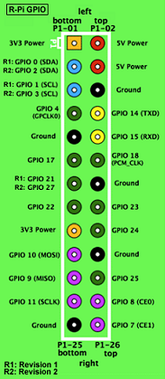

WiringPi: C GPIO library¶
| Author: Gordon Henderson |
| biicode library site |
| WiringPi library reference page |
| WiringPi home page |
The WiringPi library¶
WiringPi is a GPIO access library written in C for the BCM2835 used in the Raspberry Pi. It’s released under the GNU LGPLv3 license and is usable from C and C++. It’s designed to be familiar to people who have used the Arduino “wiring” system.
The Raspberry Pi has a 26-pin General Purpose Input/Output (GPIO) connector and this carries a set of signals and buses. There are 8 general purpose digital I/O pins - these can be programmed as either digital outputs or inputs. One of these pins can be designated for PWM output too. Additionally there is a 2-wire I2C interface and a 4-wire SPI interface (with a 2nd select line, making it 5 pins in total) and the serial UART with a further 2 pins.
The Revision 2 Raspberry Pi has an additional 4 GPIO lines on a separate connector which you have to solder onto the board.
The I2C, SPI and UART interfaces can also be used as general purpose I/O pins when not being used in their bus modes, giving a grand total of 8 + 2 + 5 + 2 = 17 I/O pins on the P1 connector (plus 4 more on the P5 connector on a Revision 2 Pi)
WiringPi is extendable and modules are provided to extend WiringPi to use analog interface devices on the Gertboard, and to use the popular MCP23x17/MCP23x08 (I2C 7 SPI) GPIO expansion chips, as well as module that will allow blocks of up to 4 74x595 shift registers to be daisy-chained together for an additional 32-bits worth of output as a single unit. (You can have several blocks of 4 74x595s if needed) One of the extension modules allows you to use an ATmega (e.g. Arduino, or the Gertboard) as more GPIO expansion too - via the Pi’s serial port.
Additionally, you can easily write your own expansion modules to integrate your own peripheral devices with WiringPi as required.
WiringPi supports analog reading and writing, and while there is no native analog hardware on a Pi by default, modules are provided to support the Gertboards analog chips and other A/D and D/A devices can be implemented relatively easily.
The WiringPi devLib¶
The devLib is a set of library routines implemented using WiringPi to give you easy access to some popular peripherals. Devices supported include character LCD displays (based on the Hitachi HD44780U chips), and graphical ones - e.g. the common 128x64 pixel displays with the generic 12864H driver chip. The DS1302 RTC clock chip, sensors based on the Maxdetect chips (e.g. RHT003) the Gertboard and PiFace interface boards and so on.
Raspberry Pi GPIO Pin Layout¶
| GPIO Rev.1 | GPIO Pin Layout | GPIO Rev.2 |

|
 | 
|
| P1: The Main GPIO connector | |||||||
| WiringPi Pin | BCM GPIO | Name | Header | Name | BCM GPIO | WiringPi Pin | |
| 3.3v | 1 | 2 | 5v | ||||
| 8 | Rv1:0 - Rv2:2 | SDA | 3 | 4 | 5v | ||
| 9 | Rv1:1 - Rv2:3 | SLC | 5 | 6 | 0v | ||
| 7 | 4 | GPIO7 | 7 | 8 | TxD | 14 | 15 |
| 0v | 9 | 10 | RxD | 15 | 16 | ||
| 0 | 17 | GPIO0 | 11 | 12 | GPIO1 | 18 | 1 |
| 2 | Rv1:21 - Rv2:27 | GPIO2 | 13 | 14 | 0v | ||
| 3 | 22 | GPIO3 | 15 | 16 | GPIO4 | 23 | 4 |
| 3.3v | 17 | 18 | GPIO5 | 24 | 5 | ||
| 12 | 10 | MOSI | 19 | 20 | 0v | ||
| 13 | 9 | MISO | 21 | 22 | GPIO6 | 25 | 6 |
| 14 | 11 | SCLK | 23 | 24 | CE0 | 8 | 10 |
| 0v | 25 | 26 | CE1 | 7 | 11 | ||
| P5: Secondary GPIO connector (Rev. 2 Pi only) | |||||||
| WiringPi Pin | BCM GPIO | Name | Header | Name | BCM GPIO | WiringPi Pin | |
| 5v | 1 | 2 | 3.3v | ||||
| 17 | 28 | GPIO8 | 3 | 4 | GPIO9 | 29 | 18 |
| 19 | 30 | GPIO10 | 5 | 6 | GPIO11 | 31 20 | |
| 0v | 7 | 8 | 0v | ||||